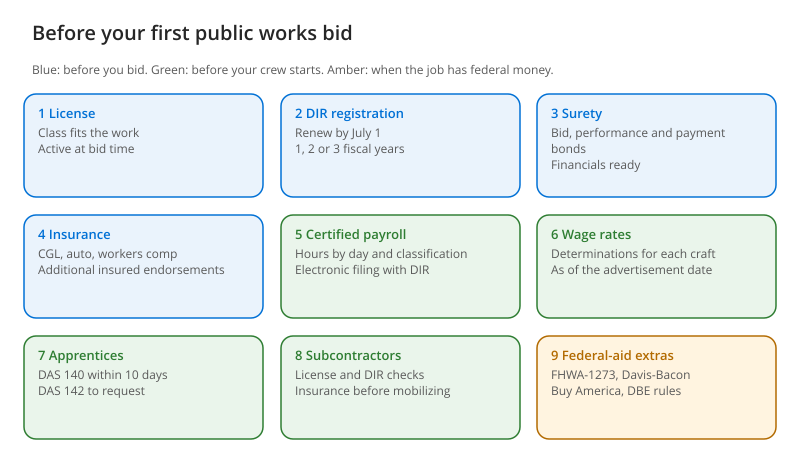

Getting ready for your first public works job
In one sentence: most of what makes public works hard is set up once, before the first bid, and then kept current.

Before you bid
- The right contractor license. The license class must match the work, and it must be active when you submit the bid. See Contractor licenses for public works.
- DIR public works contractor registration. No registration, no bid. Renew it every fiscal year or buy several years at once. See DIR public works contractor registration.
- A surety relationship. You will need a bid bond with almost every bid and payment and performance bonds after award. A surety needs your financial statements, work history and personal indemnity, so start early. See Surety bonding and bonding capacity.
- Insurance that matches public contracts. General liability, auto, workers' compensation and often an umbrella, with the endorsements agencies ask for. See Insurance requirements on public contracts.
- A way to find bids. Agency portals, plan rooms, builders' exchanges. See Finding public bids.
Before your crew starts
- Payroll that can produce certified payroll. Each worker's classification, hours by day, rate, fringe benefits and deductions, every week. See Certified payroll.
- Prevailing wage rates for the job. Download the determinations for each craft and county in effect on the bid advertisement date. See Prevailing wage.
- Apprenticeship paperwork. Send the DAS 140 within 10 days of signing and request apprentices with the DAS 142 when you need them. See Apprentices on public works.
- Subcontractor checks. License and DIR registration for every sub and lower-tier sub, before they set foot on site.
- Federal-aid extras, if the job has federal money. See Federal-aid jobs: Davis-Bacon and FHWA-1273.
Keep current
- DIR registration renews by July 1 for the next fiscal year.
- License, insurance certificates and bond capacity: track expiration dates.
- Prevailing wage determinations change, usually in February and August; the rates for a job are fixed at bid advertisement, with scheduled increases built into many determinations.
PM notes
Write down who in the office owns each item. On a small company, payroll compliance often falls between the PM and the bookkeeper, and that is where penalties come from.
Common mistakes / what agencies actually check
- Letting the DIR registration lapse over the July 1 renewal date while a bid is out.
- First call to a surety the week of the bid.
- Payroll software that can't split one worker's hours across two classifications.